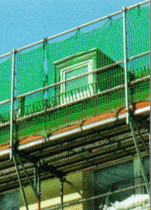

Schutzgerüste
Schutzgerüste sind Gerüste, die als Fang- oder Dachfanggerüste abstürzende Personen auffangen oder als Schutzdächer Personen gegen herabfallende Gegenstände schützen.
Als Schutzgerüste können verwendet werden:



Schutzgerüste sind Gerüste, die als Fang- oder Dachfanggerüste abstürzende Personen auffangen oder als Schutzdächer Personen gegen herabfallende Gegenstände schützen.
Als Schutzgerüste können verwendet werden: